Chapter 1 Setup
Welcome! This lab will introduce you to some basic data analysis using the R programming language. In order to do this, there are a few steps you need to complete so that you can access the material.
1.1 Set up Account
1.2 Access Materials
1.3 Start RStudio
Open Terra - use a web browser to go to
anvil.terra.bioIn the drop-down menu on the left, navigate to “Workspaces”. Click the triple bar in the top left corner to access the menu. Click “Workspaces”.

Click on the name of your Workspace. You should be routed to a link that looks like:
https://anvil.terra.bio/#workspaces/<billing-project>/<workspace-name>.Click on the cloud icon on the far right to access your Cloud Environment options.
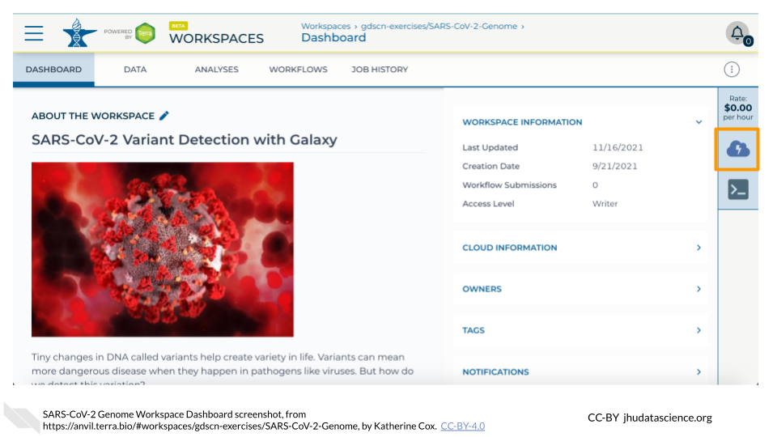
In the dialogue box, click the “Settings” button under RStudio
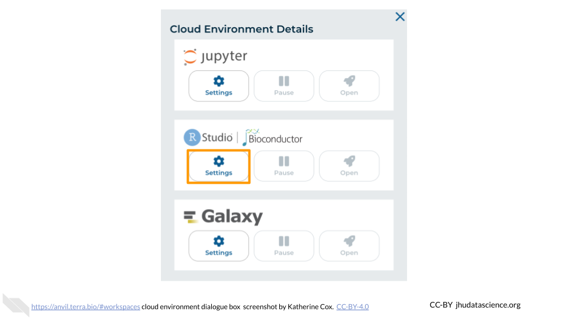
You will see some details about the default RStudio cloud environment, and a list of costs because it costs a small amount of money to use cloud computing.
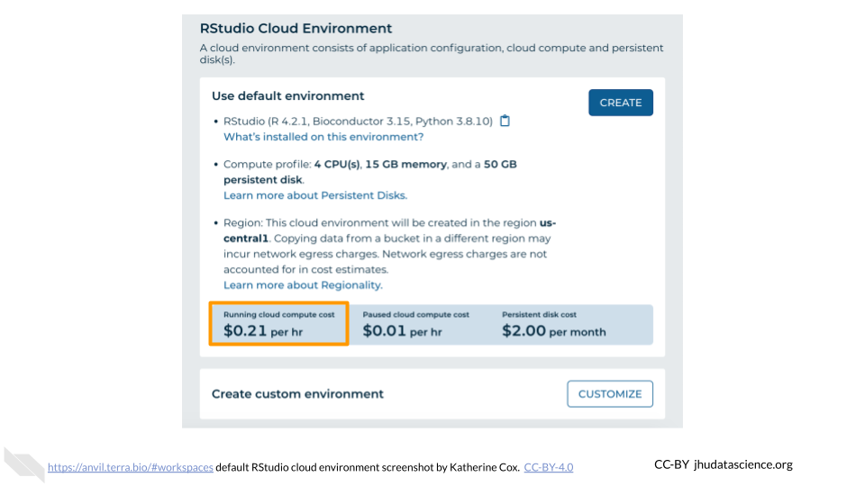
Click “CUSTOMIZE”.
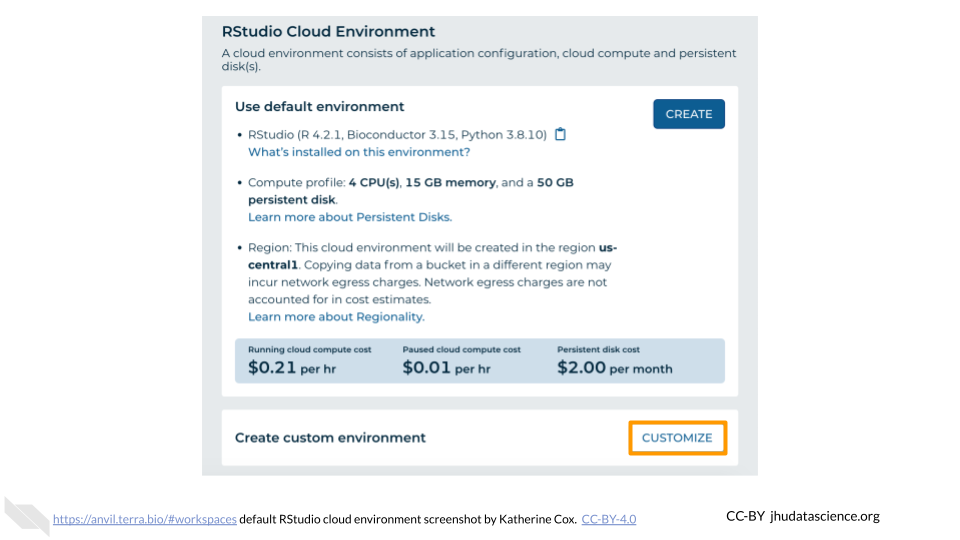
Under “Application configuration” you will see a dropdown menu. While this looks like a dropdown menu, you can also enter text yourself. Copy the following link into the box:
test docker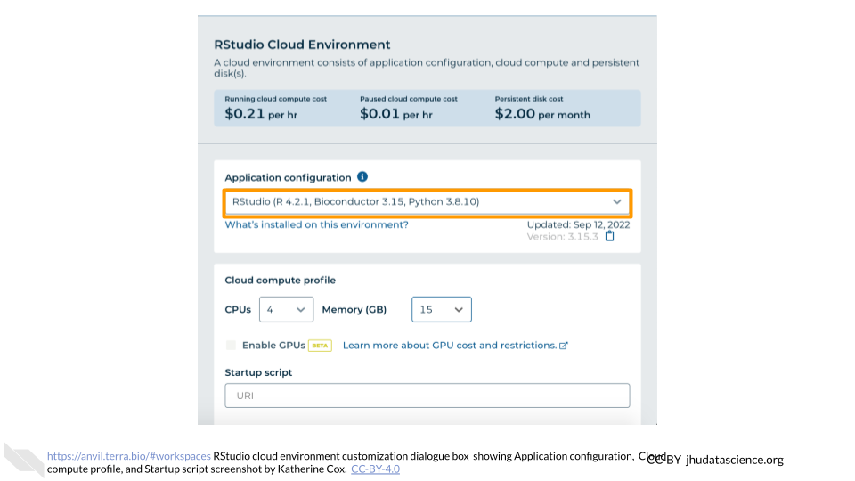
Under “Startup script” you will see textbox. Copy the following link into the box:
test startup script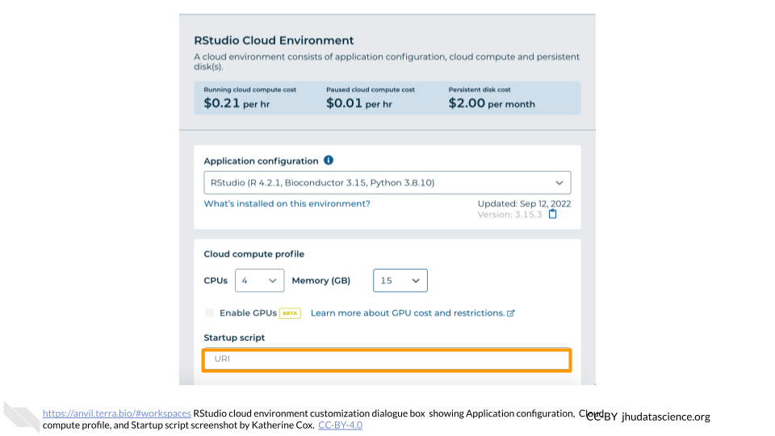
Click “CREATE”.
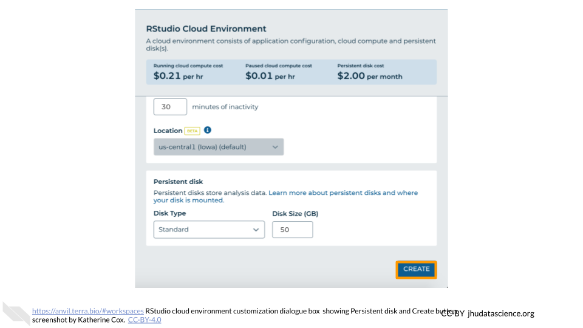
The dialogue box will close and you will be returned to your Workspace. You can see the status of your cloud environment by hovering over the RStudio logo. It will take a few minutes to create your environment. When your environment is ready, its status will change to “Running”. Click on the RStudio logo to open a new dialogue box that will let you launch RStudio.
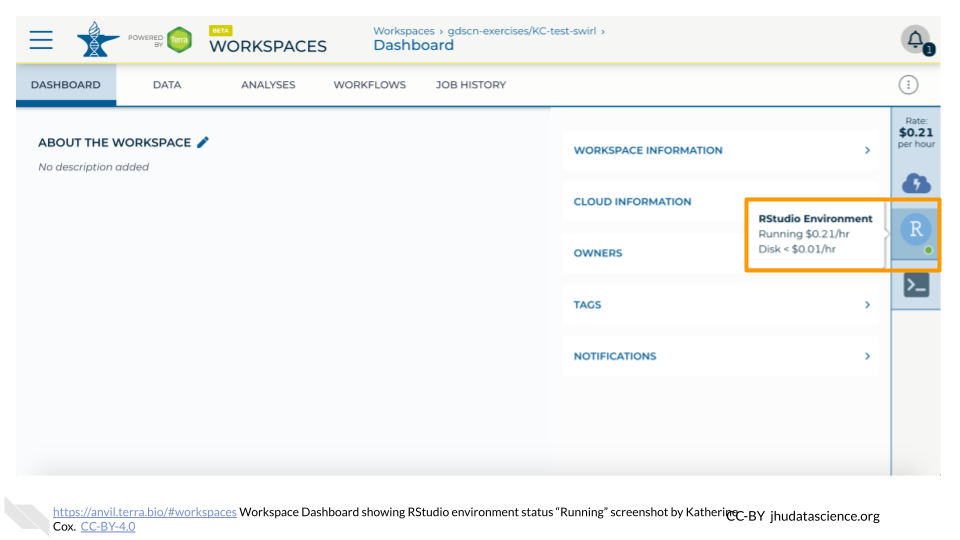
Scroll down and select RStudio from the Community-Maintained RStudio Environments section. NOTE: AnVIL is very versatile and can scale up to use very powerful cloud computers. It’s very important that you select a cloud computing environment appropriate to your needs to avoid runaway costs. If you are uncertain, start with the default settings; it is fairly easy to increase your compute resources later, if needed, but harder to scale down.
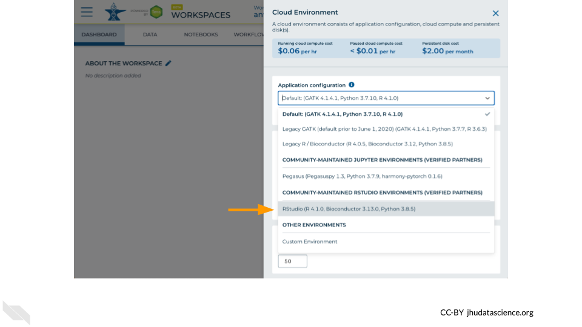
Leave everything else as-is. To create your RStudio Cloud Environment, click on the “CREATE” button.
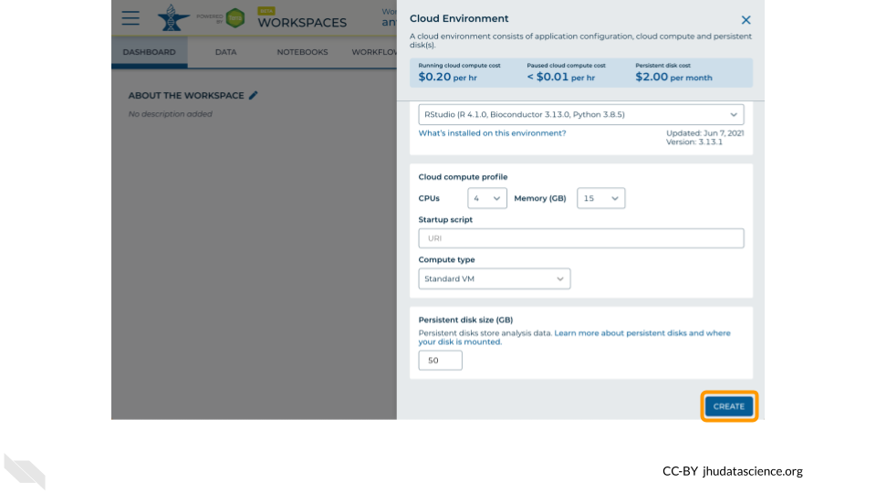
Your Cloud Environment will be available in a few minutes after the cloud resources are provisioned and your software starts up. The upper right corner displays the status and should say “Creating” while resources are being provisioned.
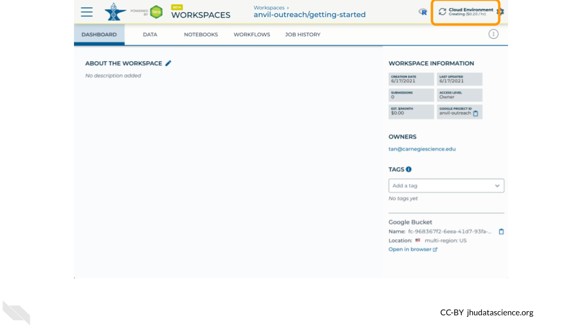
After a few minutes, you will see the status change to “Running”.
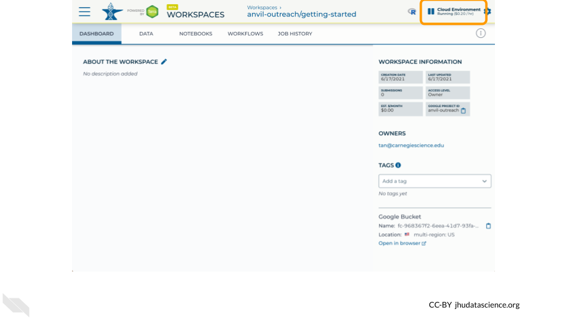
Click on the “R” icon to launch RStudio.
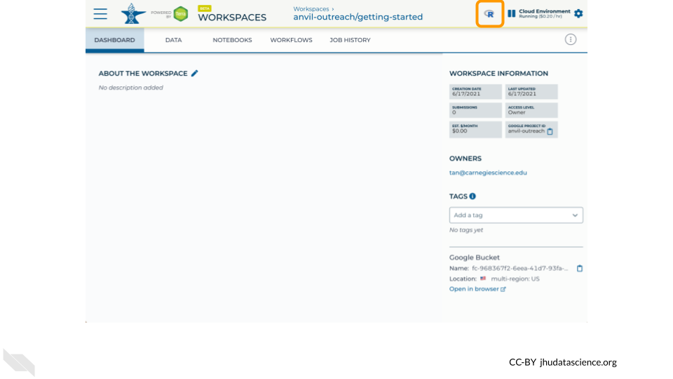
You should now see the RStudio interface with information about the version printed to the console.
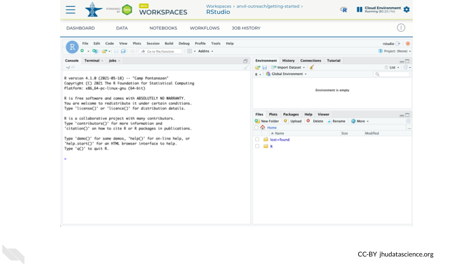